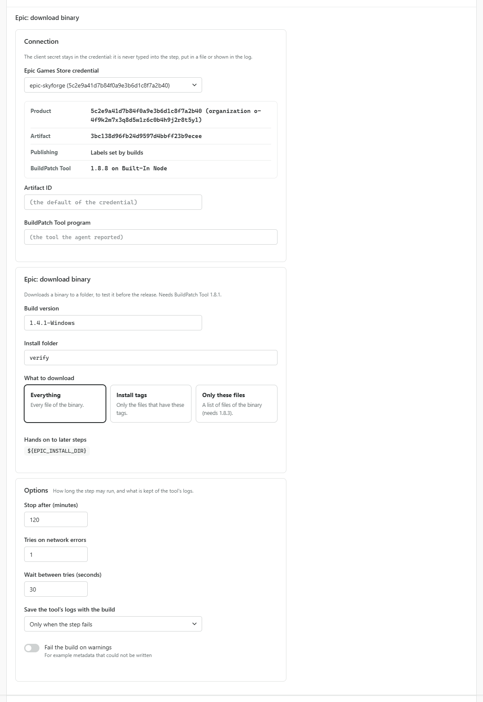

Epic: download binary
Download a binary from Epic to a folder on the agent, to test it before you release it.
When to use it
Use it to check that what players will get really starts. A test build can download the binary you just uploaded, then run a smoke test on it. It needs BuildPatch Tool 1.8.1.
Every Epic step runs the Epic BuildPatch Tool on the agent. The agent needs the tool: see Install BuildPatch Tool. A step that needs a newer tool than the agent has stops with a message that names the version the agent has.
How to set it up
- Open the build configuration, then Settings › Build steps › Add build step.
- Type
Epicin Filter step types and click Epic: download binary. - Pick the credential.
- Type the Build version and the Install folder.
- Choose What to download.
- Click Save.

Every field
Connection
| Field | What it does | Default | Example |
|---|---|---|---|
| Epic Games Store credential | The credential that holds your BuildPatch Tool keys. The list shows the credentials you may use. The secret is never typed in the step, never written to a file and never shown in the log. | None. The step fails if you pick nothing. | Epic Store (Skyforge) |
| Artifact ID | The Epic artifact to work on. Leave it empty to use the Default artifact ID of the credential. | Empty (the credential default) | 0f2b8a6c9d1e4c37a5e8b1d6c2f94a70 |
| BuildPatch Tool program | The full path of the BuildPatch Tool program on the agent. Leave it empty to use the tool the agent reported. | Empty (the tool the agent reported) | D:/Tools/BuildPatchTool/BuildPatchTool.exe |
Epic: download binary
| Field | What it does | Default | Example |
|---|---|---|---|
| Build version | The version to download. | ${EPIC_BUILD_VERSION} (the upload step's version) | 1.4.57-Windows |
| Install folder | The folder the files go to. | epic-install | epic-install |
| Everything | Every file of the binary. | Chosen | - |
| Install tags | Only the files that have these tags. | Not chosen | - |
| Install tags (field) | Shown for Install tags. Tags separated by commas. At least one is needed. | Empty | movies,music |
| Only these files | A list of files of the binary. Needs BuildPatch Tool 1.8.3. | Not chosen | - |
| Files | Shown for Only these files. One path of the binary per line. Each entry must match the binary exactly. The list may not be empty. | Empty | Content/Movies/intro.bk2 |
Options
| Field | What it does | Default | Example |
|---|---|---|---|
| Stop after (minutes) | The step is stopped after this time. | 120 | 120 |
| Tries on network errors | How many times the step runs BuildPatch Tool when it fails because of a network problem. A wrong key or a missing permission is never tried again. | 1 | 3 |
| Wait between tries (seconds) | The pause between two tries. | 30 | 60 |
| Save the tool’s logs with the build | Whether the logs BuildPatch Tool wrote on the agent are kept as build artifacts in epic-logs. Choices: Only when the step fails, Always, Never. | Only when the step fails | Always |
| Fail the build on warnings | Fails the step when BuildPatch Tool gave warnings, for example when metadata could not be written. Without it, warnings only show in the log. | Off | On |
Hands on to later steps
| Name | What it holds |
|---|---|
EPIC_INSTALL_DIR | The full path of the folder the binary was downloaded to. |
A worked example
After the upload, a step downloads the new version to epic-install with Everything. A PowerShell step then starts ${EPIC_INSTALL_DIR}\Skyforge.exe -smoketest.
What you see when it runs
Epic: credential Epic Store (Skyforge), product 8c1d5f, artifact 0f2b8a..., Publishing: Labels set by builds Epic: download version 1.4.57-Windows to D:\agent\workspace\Epic Publish\epic-install Epic: Step output EPIC_INSTALL_DIR = D:\agent\workspace\Epic Publish\epic-install
Problems and fixes
| Message | What to do |
|---|---|
| "Only these files" is chosen but the list is empty | Add at least one path, or choose another option. |
| "Install tags" is chosen but no tag is given | Type at least one tag. |
| A file in your list is not in the binary | Entries must match the manifest exactly. Check the spelling and the slashes. Epic: inspect binaries (Metadata) lists the files. |
| An option needs a newer tool | The tool must be 1.8.1 or newer, and 1.8.3 for a file list. Update it with Install BuildPatch Tool. |